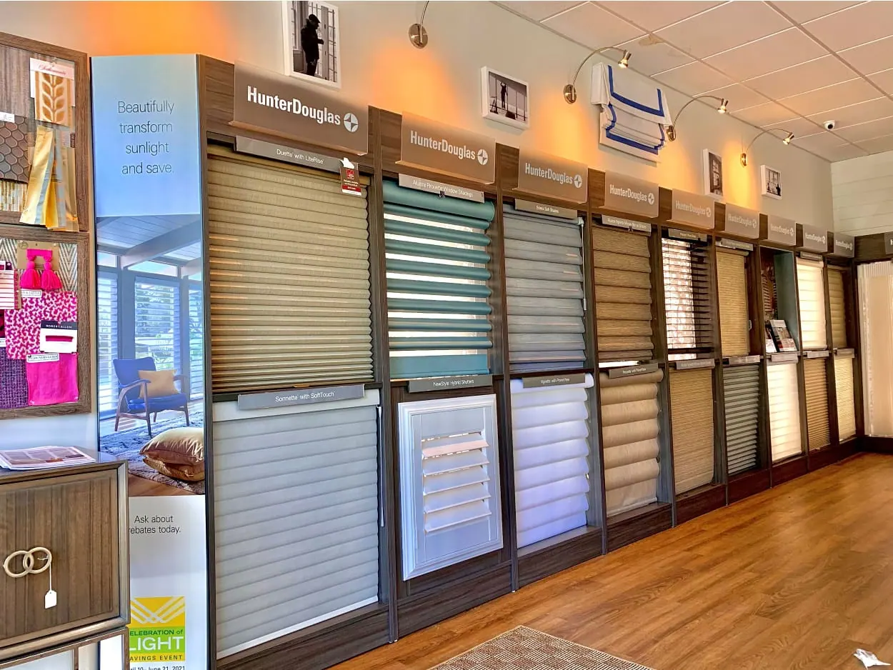
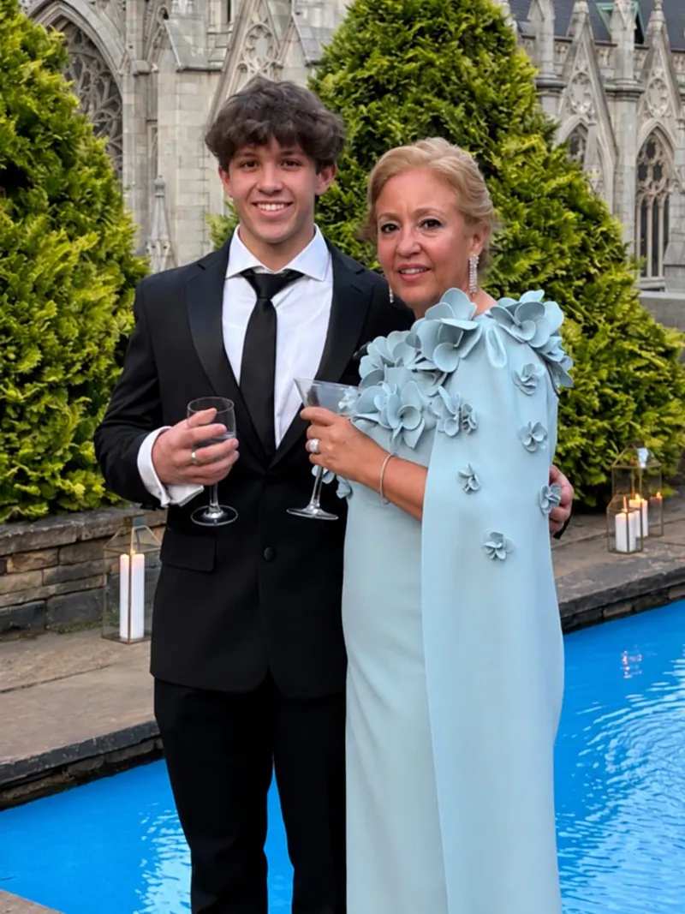

About us
Meet Janis & Isaac
Locally owned in Shelton for over 25 years. One of us comes to your home, walks every room with you, and stays with the job through installation.
Meet Janis & Isaac
A Passion for Design. A Commitment to Excellence.
From luxurious custom draperies to blinds, shades and shutters, we combine exceptional craftsmanship, quality products and personalized service to bring beauty and functionality to every space.
We're not a call center or a franchise territory. When you book a consultation, one of us comes to your home, walks every room with you, and stays with the job through installation. That's how we've worked for over 25 years.

More than great window coverings
The possibilities are endless, but here are some of the product offerings from Custom Windows: Custom Shades (roman, valances, natural woven, sunscreen & more). We also offer, Plantation Shutters, Draperies, Drapery Hardware, Bedding, Upholstery (headboards, cornices, benches, walls & more).
Custom Windows offers a huge selection of Hunter Douglas window fashions, including customer favorites, like Duette Honeycomb Shades, Silhouette Window Shadings, and Luminette Privacy Sheers, and Shutters. Hunter Douglas has hundreds options available for color, texture, fabric and function.
What we make

How it works
One local team from the first visit to the last bracket.
Consultation
We visit at a time that suits you, with samples, and talk through light, privacy and style room by room.
Measure and quote
We measure every window and give you a clear written quote.
Order
We order everything and track it, so you don't have to.
Install
Our installers fit, adjust and clean up, and show you how everything works.
From homeowners we’ve worked with
Had a great experience with Custom Windows & Upholstery. They were extremely knowledgeable and helpful throughout the whole process. The measuring was spot on, the installation was clean and professional, and the shades came out great, as you can see in the photo. Everything fits perfectly and looks exactly how we wanted. Highly recommend them for anyone looking for quality window treatments and knowledgeable, professional service.
I have used this company 3 times… The workers are very polite & well trained for their roles. They called before they came to confirm the time they will be at my house. The owner Janis is very helpful and an "angel". The prices are very reasonable.
Had such a great experience with Custom Windows! Everyone was so helpful and welcoming. Isaac was especially sweet and helpful and made the experience even better. Highly recommend!
Where we work
Based in Shelton, we cover lower Fairfield County and the New Haven County shoreline.
Fairfield County
- Greenwich
- Stamford
- Darien
- New Canaan
- Norwalk
- Westport
- Weston
- Wilton
- Fairfield
- Easton
- Trumbull
- Shelton
The shoreline
- Milford
- Orange
- West Haven
- New Haven
- Branford
- Guilford
- Madison
Showroom by appointment. (203) 225-9066
Questions we hear often
Do you offer free in-home consultations?
Yes. One of us comes to your home with samples, walks every room with you, and gives you a clear written quote after measuring every window.
What areas do you serve?
We are based at 100 Beard Sawmill Rd, Suite 225 in Shelton, CT, and have served Fairfield County, the New Haven County shoreline, the New York metro area and beyond for over 25 years.
Which brands do you carry?
We are an authorized dealer for Hunter Douglas, Alta Window Fashions and Horizons, and we make custom drapery, bedding and upholstery.

Let’s look at your windows together.
A free visit, real samples, and an honest recommendation. No pressure to buy on the spot.